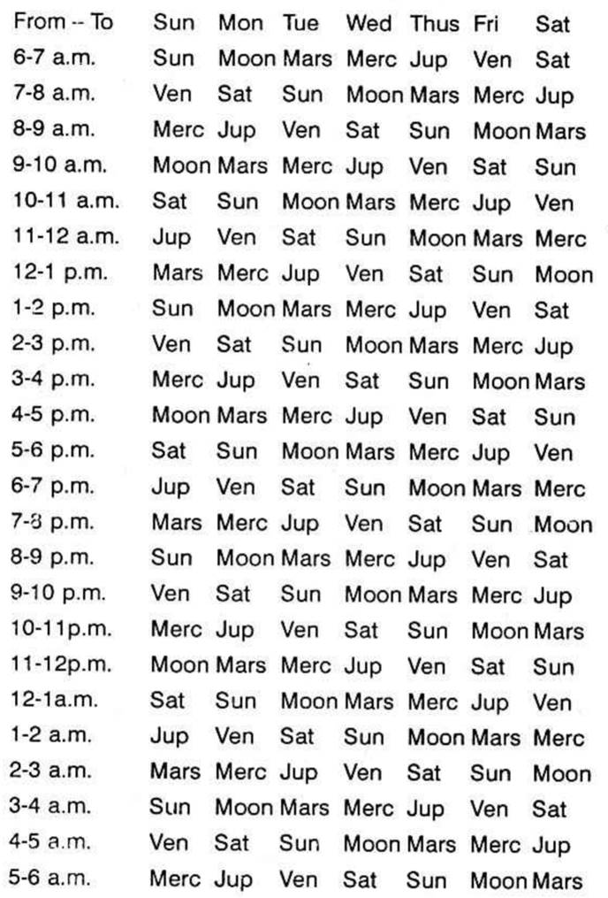

The ecliptic is the apparent pathway of the Sun in the Heavens. The planets and the other luminary Moon, follow their own individual tracks which lie along the ecliptic on north and south of it. This width on either side is about 7½° and hence the pathway of the planets is around 15° in width, having the ecliptic in its centre. This is called the Zodiac.
If one observes, it will appear that the whole Zodiac goes round the earth once a day, i.e., once in 24 hours and the same portion of the Zodiac rises in the east in 23 hours 56 minutes and few seconds.
As the Zodiac is divided into 12 equal parts called Solar mansion (sign or rasi) (Mesha-Aries to Meena – Pisces), each division will be appearing in the east, roughly for a duration of 2 hrs. In other words, the previous sign will appear to rise up in the heavens and the next sign will commence to rise nearly two hours after the previous sign began to rise. Hence the 12 signs rise in the east, roughly at an interval of 2 hours.
The Hindu astrologers have subdivided each sign into two halves and called such a division as a Hora. Hence roughly one hour is needed for each Hora to rise in the east or pass through the Meridian. But the Hindu astrologers, in olden days did not calculate the time in hours and minutes. They used to measure in Ghatis and Vigatis or Naligai and Vinadi. Hence a day is of 60 Ghatis. Hence each sign is approximately 5 Ghatis and half a sign or a Hora will be about 2 ½ Ghatis.
Pharos in Chaldean star lord says: In remote and ancient Chaldean the knowledge of the stars and the framing of the Zodiac were the results of the Divinely Inspired Gifts to the wise men. The books of Genesis, the Mosaic Era, the Babylonic and Hindu Empires were non-existent when the Chaldean sages laid down the axiom that ‘Obstral spheres exert continual influence on terrestrial life. Chaldeans followed the Hora and found out the influence of the planets over the affairs of the people. Also it was said that certain hours are advantageous for certain matters and certain hours are unfortunate for some affairs. This method of prediction is called ‘Hora’.
The ‘Hindus’ also were aware that certain matters thrive in some hours (i.e. 2 ½ Ghatis periods) and some fail in certain hours (2 ½ Ghatis periods).
Both the Hindus and the Chaldeans do not follow the same calculations to find out which planet rules a particular time though the order of the planets is the same.
First, let us know something about the days and then about the hour or otherwise called ‘Hora’.
The names of the days are derived from both the luminaries and the other five planets, e.g. –
Sunday – Tamil (Nyayiru) Telugu (Adhivaram) others – Bhanu varam, Ravi varam etc. in India. Planet in English (Sun), Tamil-Suryan, Sanskrit-Ravi, German-Sonnag(Sonne), Dutch Zondag (Zon).
Monday – Thingal, Somavaram, etc. in India. English (Moon). German Montag (Mond), French Lundi (Lune), Italian Lunedi (Luna), Dutch Maandag (Maan) etc.
Tuesday – Sevvai-Mangalvar etc. English (Mars), French Mardi (Mars), Italian Martedi (Mars).
Wednesday – Bhuda; English (Mercury), Italian Mercoledi (Mercury), French Mercredi.
Thursday – Guru, Brihaspathi, Viyazhan, English (Jupiter), Italian Glovedi (Jove), Dutch (Donderdag), German (Thor).
Friday – Sukra, Brigu, Velli; English (Venus), Italian Venerdi (Venus), French Vendredi (Venus).
Saturday – Sani, Mandha, English (Saturn), Dutch Zaterdag (Saturn).
The results signified by the planets do predominate in the above order. Hence the names of these days are arrived at according to the effects agreeing with the particular planet.
Probably, the same effects repeat once in 7 days and hence only seven days in the week are fixed; e.g., on Sunday some matters flourish; on Monday some other affairs thrive and after 7 days the same matters have advantage on Sundays, Mondays, etc.
As regards the Hora division, the Hindus do not take the time of sunrise for their calculations. They follow strictly according to the time mentioned below.

From the table it may be observed that the planets rule the hours in an order which is the alternate days in the reverse order. Suppose Sun rules a particular hour. Then note in the reverse order, the days of the week. The alternate one is Friday ruled by Venus. Hence Venus rules the hour, after that of the sun. Similarly, Thursday is before Friday and Wednesday is the alternate one in the reverse order to Friday. Wednesday is ruled by Mercury. Hence Mercury rules the hour after Venus. Thus the order of the hours is worked out.
It will be a pleasant surprise to note that after 24 hrs. that planet which rules between 6 and 7 A.M. is the same planet which governs the day. Therefore, irrespective of sunrise, the locality and the part of the year in which one wants to find the planet ruling a particular time, simply refer to the above table.
But Westerners and Chaldeans calculate in a different manner. They divide the interval between the time of sunrise and noon into 6 equal parts and each will be little more or less than an hour depending upon the interval between sunrise and noon. Similarly the interval between moon and sunset is divided into 6 equal parts. Likewise, the time from sunset to midnight and from midnight to sunrise is worked out.
But the order of the planet ruling the first hour (a little more or less according to this calculation) is ruled by the lord of the day. The other hours are ruled by the other planets in the same order as is followed by the Hindus. Only the duration of each planetary hour division varies. (Readers are also expected to note that the Hindus adopt this hora division in an arbitrary manner and it has no connection with the rising of the sun Hora or Moon Hora in the East. Kala Hora or planetary hours are different from Hora division of a solar sign.)
Then, the doubt arises whether the hours mentioned are the standard time or the local meantime.
What is an astrological day? It is the interval between the sun-rise on a day at a particular locality to the next succeeding sunrise. As a planetary hours commence from the time of sunrise which varies according to the Latitude and Longitude of the place, one is to take the timings in the local meantime.
As we to take that each planet rules exactly one hour or are we to find out the interval between sun-rise and noon and divide it by 6, likewise noon to sunset, sunset to mid night and midnight to sun-rise? So, a research was necessary to ascertain which is to be followed. The Modern Astrological Research Institute has found that the second method is correct and the one hour systematic division needs modification.
The sun rises in the northern latitudes, according to the season, any time between 4.30 a.m. and 7.30 a.m. If one is to consider that a day commences from sunrise and the first hour is governed by the lord of the day, then one is to follow the Chaldeans and should not follow the table published in almanacs etc., which is also reproduced in this article to learn and unlearn.
Therefore, planetary hours will be exactly one hour, throughout the world only on two days in a year, i.e., when Sun passes the vernal and autumnal equinoxes on or around 22nd March and 23rd September. On other days, the duration of each planetary hour varies.
When one calculates the interval between sunrise and noon, divides by six and takes the first portion as the hora of the Lord of the day, it does not matter whether it is Local Mean Time or Standard Time. It is preferable to follow Standard Time, as the clocks are set to Indian Standard Time.
Further division of the day will be the division of the Hora. To trace the exact time when the various events in the planetary hours governed by different planets occur, it is necessary to know not only the main division day and night called Hora hours or planetary hours but also the subdivision of the planetary hours of different duration.
Suppose one wants to note the time when Saturn will rule its hour on Wednesday, so that one can avoid (a) to sign an agreement in that period or (b) to fix the marriage during that time or (c) to meet a person to negotiate any transaction etc. Adopt the following principle:
(1) What is the Indian Standard Time of sun-rise in that locality on that day? Let it be 5-10 A.M.
(2) What is the Indian Standard Time at noon in that locality on that day? Let it be 11-59 A.M.
(3) Therefore, the difference between sun-rise and noon will be 6 hrs. 49 min.
(4) Divide this by 7. Then you get 1 hour 7 min. for each division.
(5) The day selected is a Wednesday. Hence from sunrise 5-10 a.m. to 6.17 a.m. Mercury rules the time. The next is governed by Moon. Hence 6-17 a.m. to 7-24 a.m. is ruled by Moon. The next belongs to Saturn; i.e. Saturn is the lord for the duration from 7-24 a.m. to 8-31 A.M.
Therefore this period is governed by Saturn on a Wednesday ruled by Mercury. Therefore this conjoined period of Saturn and Mercury are to be avoided for such actions as mentioned above. When this conjoined period operates in the night and one spends his pleasant time with his wife, he can avoid birth of children. This is an effective method of 'Birth Control' as both Saturn and Mercury are effeminate planets. But people, planting fruit bearing trees in such conjoined planetary hours, will have very poor yield; the loss will be not only due to locust, pest, rats, etc., but also due to the scarcity of water-supply and fertiliser. Hence for every action, one is to note which planet will contribute for peace, prosperity, success, etc., and which planets are detrimental. Accordingly one can make a selection and enjoy the fruits.
(Now the question arises, whether one can come out successful by selecting such periods, even though he runs a very bad period according to dasa or according to progression. People, running bad time (a) will never follow this, or (b) even if he tries to follow he will do in the evil sub-division of the planetary hour) What is the sub division?
The planetary hour is sub-divided among the 7 planets (just as, a dasa is divided among 9 planets as Bhuktis and each Bhukti is again subdivided among the same 9 planets called antharams).
The first subdivision belongs to the planet which rules the hour and then the subdivision are governed by the other planets in the same order. Suppose the hora hour is ruled by Venus, then the first subdivisions belong to Venus and the other 6 subdivisions will be governed by Mercury, Moon, Saturn, Jupiter, Mars and Sun.
What is the use of this sub-division?
(1) Just as on a Wednesday, the hora of Saturn is to be avoided for some actions and transactions, so also, in the few minutes of the conjoined periods of Saturn sub-division in the Mercury hora and Mercury sub-division in Saturn's hora are to be avoided.
(2) If a person enjoys Jupiter Dasa, Moon Bukti, he can undertake to do any important work during the Hora of Jupiter and sub of Moon.
(3) If Mars Dasa, Jupiter Bhukti operate to one, and if the judge announces the judgment favourable to one, then the time at which he passes it, will be during Mars hora. Jupiter sub or Jupiter hora Mars sub or Mars day (Tuesday) and Jupiter Hora or Jupiter day (Thursday) and Mars Hora. In the latter case the sub will be ruled by either of the two or any other significator contributing to his success.
(4) If one wants to construct a building, he prefers the conjoined Hora of Mercury and Mars.
(5) One desiring to get married, will select the conjoined Planetary Hour of Venus and Jupiter.
The above is general. Further while selecting a Hora, the most important factor is omitted. Which is a serious mistake, i.e., (a) one does not take into consideration which part of the Zodiac rises in the East and what the Lagna is (b) nor does one consider the position of planet at the time and their relative position to the ascendant, to the cusp or that house which signifies the particular matter and to the Karaka planet which also rules the same matter.
Indeed, these three are the important investigations to be made while electing a Muhurtha.
But for common undertakings and the usual daily business, Hora will be helpful to offer confidence, peace of mind and mostly success.
Sun is the lord of Sunday. The Hora of Sun will be most potent whenever Sun is strong: i.e. whenever Sun transits in its exalted or own sign and in its constellation, Karthikai, Uthram, Uthradam.
Sun governs vitality, immunity and speedy recovery from disease. Hence, to take medicine or to undergo surgical operations, solar hour is auspicious.
As Sun indicates power authority, influence, dignity, honour and reputation, either to take charge of the following posts or to meet such people for assistance, select Sun Hora.
Father, Government officials, President (Sun, Mars and Jupiter combination); Vice-President (Sun, Mercury and Mars); Governor (Sun, Mercury and Jupiter); Mayors, Judges (Sun, Jupiter and Venus), Physicians (Sun, Mercury and Jupiter); Surgeons (Sun, Mercury and Mars), etc.
Sun Hora is beneficial for signing contracts (Sun, Mercury and Jupiter); to commit forgery or to undertake Hand-writing, Thumb impression expert post (Sun, Mercury and Saturn); to register documents, to approach for favour, to execute a will, to let on lease, to appeal for promotion, to complain to the Police about the lost property, to have mantras initiated and to concentrate, to enter into politics, etc., to purchase rice, cardamom, pepper, chilly, almond, groundnut, coconut, aromatic herbs trees with thorns, orange coloured articles, etc.
One can commence praying to Suryanarayana Lord Vishnu and also give gold to make jewels, etc. For vaccination, inoculation etc., prefer this hour.
Also, people who are governed by Sun or who have Sun as their ruling planet may pray to God for peace and prosperity during Sun's Hora.
Moon is the lord of Monday. The Hora of Moon will be very predominating on (a) Monday s, (b) Rohini star day (c) whenever Moon transits in its own sign, exalted sign and in Hastham and Sravanam star days. Also it is advantageous to note whether Moon occupies the Kendra position counted from the ascendant during the Hora of Moon, when it is strong.
Approach people during Moon Hora. Even the strong willed persons will yield. If you have to carry out the orders of a lady and if she is a strict, straight forward lady who may be moody also, arrange interview during Moon Hora. The hard paraffin will become the soft paraffin.
If you are an agriculturist, all wet land cultivation, plantation, digging wells, excavating canals may be done in these hours. Moon Hora on Friday is good for harvesting sugarcane.
If you deal in milk and milk products, dairy farm etc., Moon Hora on Sunday s, Tuesday s and Thursday s are auspicious to sell boiling milk, "Fridays" are auspicious to deal in genuine milk. On Monday s for adulterated milk, Saturday s for ice cream, etc.
Those who deal in resins, greens, food materials, gur, and those who do business in oils, kerosene, petrol, acids, etc., can start business during Moon Hora. Moon Hora on a Monday and Rohini star day is ideal especially during Gothooli Lagna.
Pearls, jewels, ornaments, corals, salt, fish etc., can be purchased in this Hora.
Suppose you buy a marshy land, knowingly or unknowingly during Moon Hora, you will have much appreciation of capital value.
Moon, the fastest moving planet, suggests that Moon Hora is advantageous for safe and successful overseas journey.
Divers should select Moon Hora, but the Lagna should not be afflicted by Saturn, if they want fortune.
Musicians select Moon Hora, on Monday s or Friday s for fertile imagination and melodious tune. Tuesday s are beneficial for those who use drum, Mridangam Thabla, etc. On Wednesday Moon Hora is favourable for Jalatharangam. If Neptune is in 5th from Lagna, during Moon Hora and if it is in a sign of long ascension, learn Veena. If it is of short ascension, take to Fiddle. If Moon is in an airy sign and it is of long ascension, start Nagaswaram; If the ascendant is of short ascension prefer flute. Thus, analyse and judge.
Moon Hora is preferable for those who get appointment as midwife, nurse, etc.
Also it is good to take up service in the Defence Department.
You can plan, contemplate and scheme during Moon Hora when the merits and demerits will dawn in your mind and you cannot decide on an impulse or rashly.
Moon Hora in the night is good. What for, need not be elaborated.
For public activities and popularity, for platform speeches etc. Moon Hora is good, especially Thursday.
If your mother is rich or your maternal relatives, discuss during Moon Hora, you will become their favourite and you will have gains without pains.
On Wednesday s during Moon Hora, you can take appointment in the Textile Department and you may put on new dress.
Hotels may be opened on Tuesday s during Moon Hora. So also for drinks.
During Moon Hora, pray to Goddess Gouri and Lalitha for peace.
Mars rules over Tuesdays. It governs Aries-Mesha and Scorpio-Vrischika. It is the lord of the star Mrigasirisha, Chitra and Dhanishta. It gets exalted in Capricorn-Makara.
Hence the Hora of Mars will be most potent whenever Mars is strong by transiting in its own or exalted signs or in its stars and on Tuesday s. suppose on a Tuesday, when Mars is 23° 20′ to 24° 6′ 40″ in Capricorn in exaltation, in its own star and own sub it is in its most potent position, especially when it happens to be the 10th house to the Lagna rising then during Mars Hora.
It is auspicious for the Commander-in-Chief to prepare for war. It is good to file any suit in a court of law. It is advantageous to argue during Mars Hora and win the case. On a Thursday, during Mars Hora try for compromise and fair settlement; purchase lands, start a brick kiln. On Saturday s commence trench or tunnel work. [Trench means, you excavate the earth vertically down whereas Tunnel is horizontal earth rather rock, removal mostly for railways, Saturn and Mars indicate Trench and Tunnel].
If you want to use manure, Mars Hora on a Monday is auspicious. To purchase surgical instruments. Sunday-Mars Hora or the day of the lord of 12 and Mars Hora. To join duty in the Military, Police or Factory, Mars Hora on Tuesday is advantageous it is lucky to start a press, mechanical engineering, industry, building, construction, or open electronics shop on a Wednesday in Mars Hora. To join duty in a court of law or take oath as a President, Judge etc., Thursday is propitious. Goldsmiths, jewellers, may have opening ceremony on Thursday s, Fridays are also good. Mars Hora on a Thursday is beneficial for executive officers of temples or industry or church or colleges and schools and those who say that they relinquish the world and start preaching to others whether they practise or not. But those who want to practise, but are not very anxious to reach other can have it on a Saturday. On Friday, Mars Hora gives vitality and satisfies the partner. It is good for union, for jewellery, for animal husbandry, for leather and hides, for coffee, tea boarding, lodging, cinema theatre, games, luxury goods, automobile, bullock carts, jutkas, agriculture, timber, furniture etc., to learn telegraphy: to deal in telephone accessories. To open a mill or factory prefer Wednesday. To prepare arms, spears, instruments, dagger to excavate, to construct a slaughter house, lethal chamber, to have lead or copper industry, to deal in hides, skins, shoes, etc., Saturdays are fortunate.
Those who buy land during Mars Hora, and sign the document in the morning, say, between 6-30 A.M. and 7-30 A.M. having Sun in the 12th Bhava will not enjoy the benefit of the appreciation of land value, as the Government will acquire the land.
But those who sign and purchase the property between 8 and 10 A.M. having Sun in the 11th house supposing that Sun rises at 6 A.M. will have the full advantage of the high price.
You can buy coral, ruby and red coloured articles. Best time to construct a house would be at a time when Mars is exalted; when Mars Hora is on and the ascendant is Scorpio and the degree in Scorpio is between 0°33′½″ to 1°20′ which will be Vishaka 4th pada governed by Jupiter and the sub is Mars. In that case there will be no difficulty for the availability of money, building materials etc. There will be the Blessing of Providence.
For peace and prosperity pray Lord Subramanya or Muruga or Narasimha or Kali or Ganesh. For Subramanya – Begin on Sunday or Tuesday especially when you serve in a military department.
On Mondays, start Kali; Badrakali, On Tuesday-Ganesh or Muruga-Veerabhadran; on Wednesdays-Narasimha; On Thursdays-Dhakshinamurthi, Raja Rajeswari; On Fridays-Veera Lakshmi and Lakshmi Narasimha. On Saturdays-Venkatesa, Venkatachalapathy, Iyyappan.
Budha (Mercury) is the lord of Wednesday. Mercury Hora is very strong and powerful on Wednesdays during the time when Mithuna or Gemini or Kanni-Virgo, rises in the East and on Ashlesha, Jyeshta and Revathi star days especially Revathi.
Admit boys and girls in schools and colleges on a Mercury day during Mercury Hora. Even the dull witted will come out in rank.
One can start memorising from poetry, important stanzas, etc. Prefer Mercury Hora to deliver a speech especially on Thursdays. So also, accept the post of a teacher or professor. Accountants, auditors, mathematicians can select Thursdays and Mercury Hora. Painters, drawing masters, artists and dancers can commence on Fridays in Mercury Hora. Editors, publishers, book-sellers, printers, press owners, publicity organisations can start functioning on Tuesdays in Mercury Hora – most efficient work will be done if one commences during Mercury Hora. Daily newspapers, almanacs, ephemeris, ambassadors, agents, representatives, brokers, auctioneers can begin on Wednesdays. Typists, should prefer Tuesdays, and Shorthand writers should select Saturdays.
Treat neurasthenic patients and those who suffer from Vitamin B deficiency during Mercury Hora. Those who commit forgery, or fraud, do it during Saturdays, Mercury Hora or Wednesdays Saturn Hora.
Those who take service in the Postal department, Telegraph and Telephone Offices, overseas communication, Engineering, correspondence, etc. or purchase lottery tickets, bonds, securities, shares, or prize bound etc., must do so on Wednesday. Mercury Hora or on the day of the lord 11 and Mercury Hora.
If you desire to float a company or to underwrite, Mercury Hora is the best.
For those who deal in paper, stationery, oil seeds, jute, wheat, quick-silver, emerald, green stone, onions, green gram, watches, telescopes and microscopes. Mercury Hora is very advantageous.
If your proceed overseas as an ambassador or as a representative or for foreign studies or for foreign collaboration, prefer Wednesdays or Thursdays and never miss Mercury Hora.
Important documents can be drafted during Mercury Hora with advantage.
Pray to Lord Vishnu, Rama, Krishna, Anjaneya, etc.
Try to concentrate. Vacillation is the only defect.
It is otherwise called Guru, viyazhan, Brahaspathi, etc. It rules over Thursday. The Hora or Jupiter will be very predominating on (a) Thursdays, (b) when Moon transits in Poorpapathrapada 4th quarter (c) when Moon transits in Cancer exalted sign of Jupiter and in Sagittarius and Pisces owned by Jupiter and (d) when Moon transits in Punarvasu, Visakha and Poorpapathrapada stars.
Approach people during Jupiter Hora. Do you want overdraft facilities from a bank? Meet the proper authorities during Jupiter Hora. Is Jupiter a benefic to you? Are you running Jupiter's period? Then, never miss to meet the ministers or high officials in the Government during Jupiter Hora. Success in your attempts is certain. Have you the desire to study Veda, Astrology, Philosophy, Religion, Law, Economics, Banking etc. Purchase books and begin to read on a Thursday, preferably on Jupiter's star day and in Jupiter Hora.
Do you deal in Gold and Silver? Is your income not satisfactory? Are you depressed? Open a branch on a Thursday in Jupiter Hora when Jupiter is in direct motion and is strong. You must have decent increase in income.
Always make it a point to meet commercial tax and Income-tax officials during Jupiter Hora. The interview will be pleasant, peaceful and profitable.
If you are ill and if a physician offers any specific medicine to be taken internally, prefer this Hora. Even to buy a tonic, to take ayurvedic medicine, Jupiter Hora on a Tuesday is advantageous.
Establishment of Stri Sadhana office for the prevention of prostitution, animal husbandry, construction of temples and charitable institutions, colleges, mutts, libraries, banks, etc., in Jupiter's Hora will prove to be advantageous.
This Hora is very essential to purchase vehicles especially on Fridays during Jupiter Hora, or refrigerators on Saturdays during Jupiter Hora or lay foundation for houses on Fridays during this hour or take up minister's post on Sundays or Tuesdays in this hora or borrow money on Thursdays or invest on shipping or Petrol Shares on Mondays or take up a job in the educational department or air travel on Wednesdays, etc.
Depending on the God or Goddess on its day, during Jupiter Hora, have the initiation of mantras.
Note down Jupiter's hora in the night hours. Be friendly with your partner in life, wife or husband. Even if you had no chance to have a child so far, Jupiter will not let you down. It will fulfil your desire by giving you a child. If you have already many, avoid this hour.
Open bank account, take up the junior auditor's post or accept the profession signified by Jupiter during its Hora. Take up Insurance policy on Saturdays during Jupiter Hora. Your endowment policy will mature and you can enjoy the benefit. But if the insurance agents were to obtain the signature of a person, in a Life Policy during the conjoined period of Saturn and Mars, the Insurance company will lose heavily, whereas it will be a fortune to the members of the family who outlive the person who has signed his policy during Mars Hora on a Saturday or Saturn Hora on a Tuesday.
The Government has to choose Jupiter Hora if they lay foundation for hospitals (on Sundays), Shipping (on Mondays); Buildings for Police, Military Magistrate-Court, Law Courts, Industry etc. (on Tuesdays); for educational Institution, Postal Departments, Communication, All India Radio, Textiles Engineering, etc. (on Wednesdays); for Law College or legal department, Temples, Churches, charitable institutions, Banks, Treasury, Revenue department, International Trade, etc. (on Thursdays); Animal Husbandry, Food department, Agriculture, Tea Board, Coffee Board, Prohibition department, Gold Decontrol etc. (on Fridays); Insurance Corporation, Labour department, mines and minerals, control department, Intelligence Dept. Retrenchment, famine, refugee, quarters for servants, slaughter house, etc. (on Saturdays). Such a beginning promises, (a) no delay and difficulty in completing the project (b) expansion and improvement, (c) co-operation from the public and their wholehearted support, and (d) fulfilment of the desire of the Government and benefit to the subjects.
It is otherwise called Sukra, Birgu, Velli, etc. It governs Friday.
The Hora of Venus is very strong for Venusian matters (a) on Fridays, (b) on the days when Moon transits in Bharani, Poorvapalguni and Poorvashada constellations and (c) when Moon transits in Taurus or Libra or Pisces which is its exalted sign. If on a Friday, during Venus Hora, when Moon transits in its own star, one commences to do any of the matters signified by Venus, knowingly or unknowingly, success is sure. Peace and prosperity are promised. Harmony and happiness can be had.
Prefer Venus Hora if you want to meet an officer who is generally impatient who is a hard task-master and who is moody. You will find that he is a calm and co-operating. Even a militant type of person, arrogant, foolhardy and rash will give a patient hearing and will be helpful. The temper gets softened during this hour. A cobra may be ferocious due to Mars. But if it takes its food, which is shown by Venus, it is harmless. The fiery nature of Mars will be toned down by Venus.
If you have to look at the girl or at the boy before fixing up your marriage, you select Venus Hora if you want to select this partner, but if you do not like the alliance you select Mars or Saturn Hora when the negotiation will fall through and you can be happy. Venus Hora promises harmony and happiness, if you feel that you are exhausted and you have lost much of your vitality, take medicine, especially Ayurvedic (especially from Sadhana Ayurveda ashramam at Calcutta) on Thursday or Friday during Venus Hora: it will rejuvenate you.
Write love letters during Venus Hora: You start writing after this hour starts and finish it before this hour is over. Even though you may not normally have command of language to give expression to your love, during Venus Hora, appropriate words will be used by you which will appeal to the partner. If you receive a reply during other Horas, do not be impatient. Wait till Venus Hora starts. Then open the sealed cover and read. You will be very happy.
Now you may ask, “She had already written and posted the letter. How can the Hora change the contents of the letter”?
The answer is this. Knowingly or unknowingly you can open the letter at any Hora. According to the Hora, you will find the letter. If it is Saturn Hora, then the partner would have mentioned the inability to meet you and she will fix up some other time. If it is Mars Hora, the tone of the letter will upset you. So, why should you take a chance? Venus Hora will arrange for tea, dinner, cinema, music party, meeting in an unfrequented place, etc. Those who would desire to cultivate love, must prefer Venus Hora.
Buy jewels, silk sarees, costly dress, diamond and costly gems, sandalwood, glass, powder, scented oils and scents, eyelash, lipstick etc., during Venus Hora. It will add beauty by moderate use.
Buy a scooter or car or any vehicle during Venus Hora, preferably on a Friday.
Start agricultural operations or open the industry to manufacture agricultural implements for tilling, ploughing, etc., especially on a Tuesday.
If you desire to have a poultry farm, cattle breeding or possessing race horses, etc., prefer Venus Hora. Contractors to supply spare parts, etc., to Railway, shipping, airport, etc., have to sign the agreement during Venus Hora on a Wednesday and those who would like to have honey-moon, have to commence their journey during Venus Hora.
During Venus Hora, have the initiation of Manthras on Goddess, especially Goddess of Wealth, Lakshmi. On Sunday during Venus Hora, you can worship Chaya Devi; on Monday, Parvathi; on Tuesday Lalitha; Raja Rajeswari, Kali; on Wednesday, Lakshminarasimha; on Thursday, Dhana Lakshmi; on Friday Sowbagya or Dhanyalakshmi; On Saturday, Alamelumangai thayar, etc.
Those who start milk dairy should have it during Venus Hora on a Monday. For rice business, Venus Hora on a Tuesday. For story writing, love letters, pleasant journey, shipping clearance agency, agency for Textiles, Rayons, silk, perfumery, toilet, pharmaceutical products, cotton, fancy articles, hosiery for woman, biscuits, chocolates, confectionery, fruits, flowers, vegetables, etc., on Wednesday during Venus Hora.
Lay foundation for women and children Hospital, animal husbandry, accountant-General's office, Income-tax office, Law court, etc. during Venus Hora on Thursdays. Or join duty in such departments on those days and hours.
Music Colleges, Cinema Theatres, Studios, Photographic Studios, Railway, Air Travel, Shipping, Stri Sadhana Hostels for ladies, Schools and Colleges for girls may, with advantage, be started during Venus Hora on Fridays.
Vigilance Home, Famine Shed, refugee Campus, Slaughter house, leather, skin and hides departments on Saturdays during Venus Hora.
Saturn is otherwise called Neelan, Mandhan, Sani, Yama.
The Hora of Saturn is strong for the matters signified by Saturn (a) on Saturdays (b) on the days when Moon transits in Saturn's signs Capricorn and Aquarius, or (c) when Moon transits in Pushya, Anuradha or Uthrapadra stars or when the Lagna at that hour is in Saturn's sign or star.
If you want to handle a violent person prefer the hour of Saturn.
You practice yoga or meditate during Saturn Hora so that you will be able to concentrate.
Write letters to Saturnians, Yogis, sages, mine-owners, landowners etc., in this hour.
Sow the seed-bulbs, potato, tapioca or groundnut or sesame in this Hora.
If you want to sever connection with anybody, this hour will help you.
For illegal intimacy this is the best hour.
Start petrol, oil, coal, skin, leather and hide business in Saturn Hora. Lay foundation for such business then.
If you find it impossible to lead your life with your wife, do not tell her your programme but disappear during Saturn Hora. If you tell her, she will come to the secluded place selected by you and continue to give trouble. Pray for Lord Venkateswars, Iyappa during Saturn Hora. Prefer this hora to become a Sanyasi.